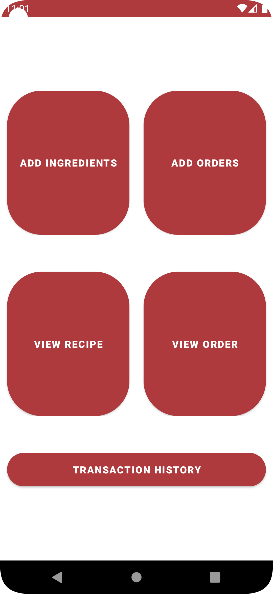
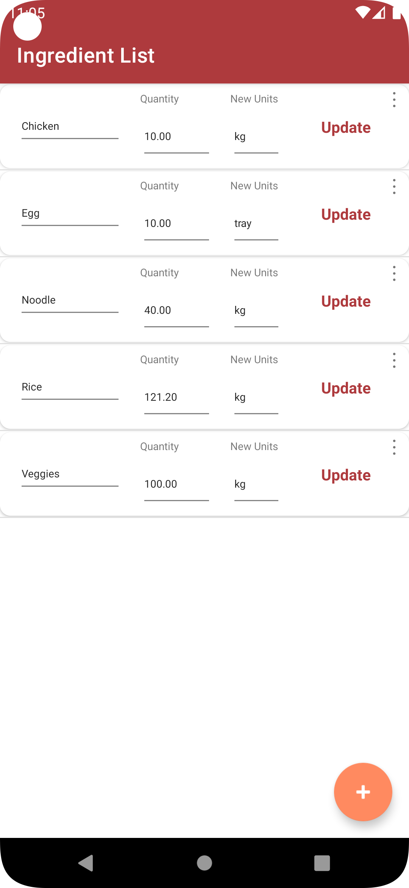
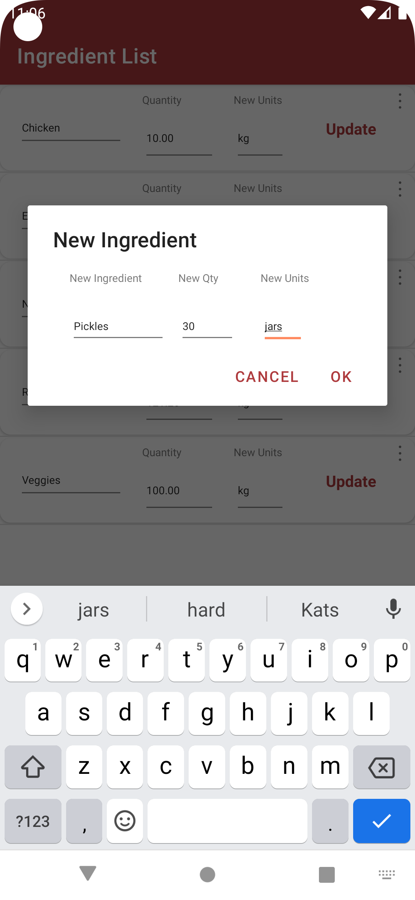
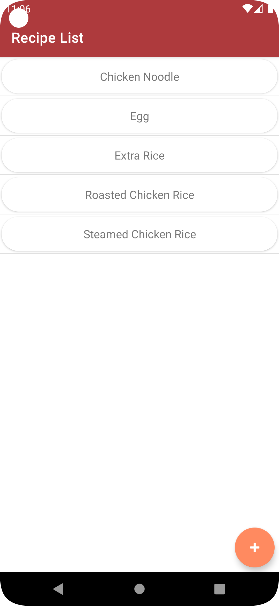
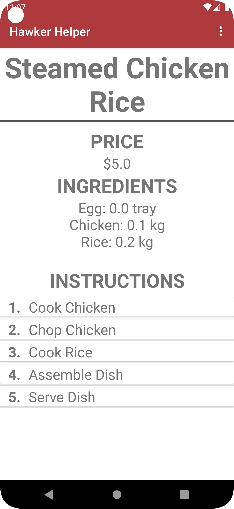
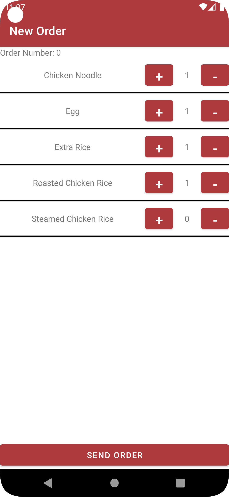
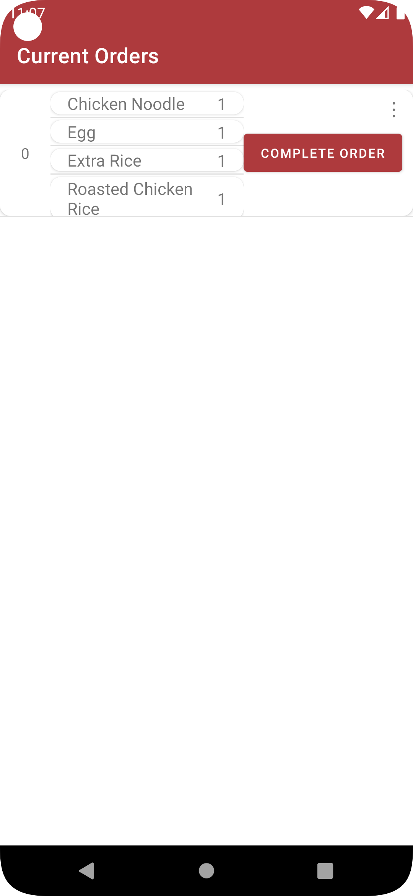
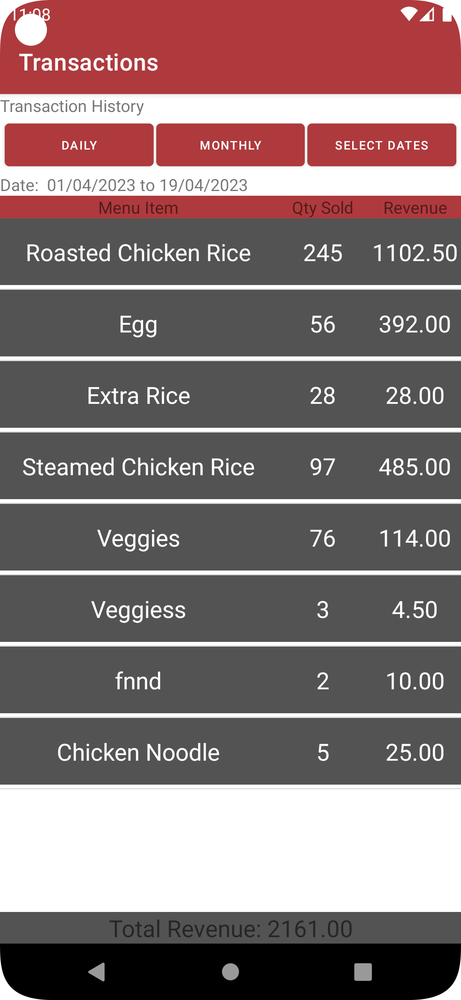

March - April 2023
To help us understand Object oriented programming and application development, we were tasked as a group to create an android application using Android Studio. We were only allowed to use Java for our programming language. Our application aims to help hawkers reduce costs and save time by implementing a Point of Sale System, Inventory Tracking System and a Recipe List.

Upon entering the application, the following homepage will be displayed.

View and update ingredients on this page by entering new values and clicking update.

To add a new ingredient, fill in the blanks, user will be prompted if any left blank.

On the Recipes page, existing recipes can be viewed or new ones can be added.

By clicking on a recipe name, we can view the recipe details and edit them if needed.

On the order page, all recipes will be displayed and this will act as POS system.

Another page to view orders, the chef can view the full order, click to view recipe and complete orders.

On the transaction history page, user can select to view sales on that day, month or a specific date range.
